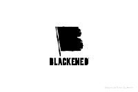
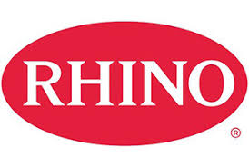
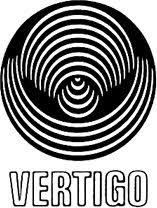
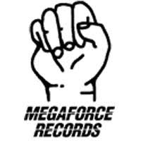

Discographie
Maisons de disques:
Blackened

Blackened Recordings a été créé par le groupe comme une maison pour tous leurs enregistrements, audio et visuels, et tout ce qui leur convient.
Rhino

Rhino Entertainment est une maison de disques américaine appartenant au groupe Warner. Elle est spécialisée dans la réédition d'albums historiques de pop, rock 'n' roll et rhythm and blues.
Universal Music
Universal Music Group (UMG), aussi connu sous le nom d'Universal, est un label de musique américain appartenant au groupe français Vivendi depuis 2000. Autrefois inclus dans Universal Pictures, dont les activités de musique et de cinéma ont été séparées en 1998, UMG est aujourd'hui indépendant des studios Universal, propriété de NBCUniversal. Universal MG est la plus grande des trois majors du disque ; au premier semestre 2011, elle représente 38,9 % des ventes mondiales3.
Vertigo

Vertigo Records est un label de musique britannique, filiale de Universal Music Group.
Warner Bros
Warner Records est un label discographique américain, fondé en 1958 par Jack Warner.
Elektra
Elektra Records est une compagnie d'édition musicale, réputée pour les stars du rock qu'elle a produites, comme Love, The Doors, Metallica, Mötley Crüe, Queen, The Stooges ou encore Buffalo Springfield.
Megaforce
Megaforce Records est un label discographique indépendant Américain. Le label a été fondé en 1982 pour produire le premier album de Metallica. Après que Metallica a eu un succès majeur dans le monde du metal, Megaforce Records a commencé à être un label reconnu et respecté.
Kill 'Em All 1983
Voici la liste des musiques que comporte cet album :
- Hit the Lights
- The Four Horsemen
- Motorbreath
- Jump In The Fire
- (Anesthesia) - Pulling Teeth
- Whiplash
- Phantom Lord
- No Remorse
- Seek and Destroy
- Metal Militia

Ride the Lightning 1984
Voici la liste des musiques que comporte cet album :
- Fight Fire With Fire
- Ride the Lightning
- For Whom the Bell Tolls
- Fade to Black
- Trapped Under Ice
- Escape
- Creeping Death
- The Call of Ktulu
Master of Puppets 1986
Voici la liste des musiques que comporte cet album :
- Battery
- Master Of Puppets
- The Thing That Should Not Be
- Welcome Home (Sanitarium)
- Disposable Heroes
- Leper Messiah
- Orion
- Damage, Inc.

Garage Day 1987
Voici la liste des musiques que comporte cet album :
- Last Caress/Green Hell
- Crash Course in Brain Surgery
- The Wait
- The Small Hours
- Helpless
...And Justice for All 1988
Voici la liste des musiques que comporte cet album :
- Blackened
- ...And Justice for All
- Eye of the Beholder
- One
- The Shortest Straw
- Harvester of Sorrow
- The Frayed Ends of Sanity
- To Live Is To Die
- Dyers Eve
Metallica (The Black Album) 1991
Voici la liste des musiques que comporte cet album :
- Enter Sandman
- Sad But True
- Holier Than Thou
- The Unforgiven
- Wherever I May Roam
- Don't Tread on Me
- Through the Never
- Nothing Else Matters
- Of Wolf and Man
- The God That Failed
- My Friend of Misery
- The Struggle Within
Load 1996
Voici la liste des musiques que comporte cet album :
- Ain't My Bitch
- 2 X 4
- The House Jack Built
- Until It Sleeps
- King Nothing
- Hero of the Day
- Bleeding Me
- Cure
- Poor Twisted Me
- Wasting My Hate
- Mama Said
- Thorn Within
- Ronnie
- The Outlaw Torn
Reload 1997
Voici la liste des musiques que comporte cet album :
- Fuel
- The Memory Remains
- Devil's Dance
- The Unforgiven II
- Better Than You
- Slither
- Carpe Diem Baby
- Bad Seed
- Where the Wild Things Are
- Prince Charming
- Low Man's Lyric
- Attitude
- Fixxxer
Garage Inc. 1998
Voici la liste des musiques que comporte cet album :
- Free Speech for the Dumb
- It's Electric
- Sabbra Cadabra
- Turn the Page
- Die, Die My Darling
- Loverman
- Mercyful Fate
- Astronomy
- Whiskey in the Jar
- Tuesday's Gone
- The More I See
St. Anger 2003
Voici la liste des musiques que comporte cet album :
- Frantic
- St. Anger
- Some Kind of Monster
- Dirty Window
- Invisible Kid
- My World
- Shoot Me Again
- Sweet Amber
- The Unnamed Feeling
- Purify
- All Within My Hands
Death Magnetic 2008
Voici la liste des musiques que comporte cet album :
- That Was Just Your Life
- The End of the Line
- Broken, Beat & Scarred
- The Day That Never Comes
- All Nightmare Long
- Cyanide
- The Unforgiven III
- The Judas Kiss
- Suicide & Redemption
- My Apocalypse
Lulu 2011
Voici la liste des musiques que comporte cet album :
- Brandenburg Gate
- The View
- Pumping Blood
- Mistress Dread
- Iced Honey
- Cheat on Me
- Frustration
- Little Dog
- Dragon
- Junior Dad
Hardwired... to Self-Destruct 2016
Voici la liste des musiques que comporte cet album :
- Hardwired
- Atlas, Rise!
- Now That We're Dead
- Moth Into Flame
- Dream No More
- Halo On Fire
- Confusion
- ManUNkind
- Here Comes Revenge
- Am I Savage?
- Murder One
- Spit Out The Bone